Herramientas y Conectores¶
De todas las formas posibles de interactuar con una base de datos, nos vamos a centrar en el uso de conectores, porque son la forma más directa y habitual de acceder a la base de datos desde un lenguaje de programación, como Kotlin, que es el que estamos utilizando en este módulo.
En la introducción ya vimos que un conector (también llamado driver) es una librería software que permite que una aplicación se comunique con un gestor de base de datos (SGBD). Actúa como un puente entre nuestro código y la base de datos, traduciendo las instrucciones SQL a un lenguaje que el gestor puede entender y viceversa. Sin un conector, tu aplicación no podría comunicarse con la base de datos.
- En herramientas gráficas como DBeaver, los drivers se gestionan automáticamente.
- En proyectos en código, se añaden como dependencia (por ejemplo, en Maven, Gradle, pip…).
Una base de datos puede ser accedida desde diferentes orígenes o herramientas, siempre que tengamos:
- Las credenciales de acceso (usuario y contraseña)
- El host/servidor donde se encuentra la base de datos
- El motor de base de datos (PostgreSQL, MySQL, SQLite, etc.)
- Los puertos habilitados y los permisos correctos
Principales formas de conectarse a una base de datos
| Medio de conexión | Descripción |
|---|---|
| 🖥️ Aplicaciones de escritorio | Herramientas gráficas como DBeaver, pgAdmin, MySQL Workbench, DB Browser for SQLite. Permiten explorar, consultar y administrar BD de forma visual. |
| 💻 Aplicaciones desarrolladas en código | Programas en Kotlin, Java, Python, C#, etc., mediante conectores como JDBC, psycopg2, ODBC, etc. para acceder a BD desde código. |
| 🔠 Línea de comandos | Clientes como psql (PostgreSQL), mysql, sqlite3. Permiten ejecutar comandos SQL directamente desde terminal. |
| 🌐 Aplicaciones web | Sitios web que acceden a BD desde el backend (por ejemplo, en Spring Boot, Node.js, Django, etc.). |
| 🔄 APIs REST o servidores intermedios | Servicios web que conectan la BD con otras aplicaciones, actuando como puente o capa de seguridad. |
| 📱 Aplicaciones móviles | Apps Android/iOS que acceden a BD locales (como SQLite) o remotas (vía Firebase, API REST, etc.). |
| 📂 Herramientas de integración de datos | Software como Talend, Pentaho, Apache Nifi para migrar, transformar o sincronizar datos entre sistemas. |
🔹JDBC¶
JDBC (Java Database Connectivity) es una API estándar de Java que permite a los programas escritos en Java (y por extensión en Kotlin) conectarse y trabajar con bases de datos relacionales.
-
Driver JDBC: cada gestor de BD proporciona un "driver" específico (un .jar) que implementa la interfaz de JDBC.
mysql-connector-j, postgresql-42.x.jar, sqlite-jdbc.jar. -
URL de conexión: se usa una cadena con formato
jdbc:<gestor>://<host>:<puerto>/<nombre_base_datos>para indicar cómo llegar a la BD.Gestor de Base de Datos URL de conexión PostgreSQL jdbc:postgresql://localhost:5432/empresa MySQL jdbc:mysql://localhost:3306/empresa SQLite jdbc:sqlite:empresa.sqlite -
Código estándar: gracias a JDBC, el mismo código Java/Kotlin puede trabajar con distintas bases de datos cambiando solo la URL y el driver.
En los siguientes apartados veremos como conectarnos a una BD Relacional, tanto desde la herramienta gráfica de BD integrada de IntelliJ como desde la herramienta universal para la gestión de bases de datos DBeaver y también desde una aplicación desarrollada en Kotlin.
🔹Desde IntellJ¶
IntelliJ incorpora una potente herramienta de gestión de bases de datos que permite visualizar la base de datos directamente desde el entorno de desarrollo (IDE), lo que permite:
- 📂 Explorar la estructura de la base de datos (tablas, vistas, claves, relaciones…)
- 🔎 Consultar datos en tiempo real con editores SQL integrados
- 🛠️ Modificar tablas, añadir registros o ejecutar scripts SQL sin salir del proyecto
- ⚡ Ver los cambios reflejados inmediatamente tras ejecutar una operación desde el código
- ✅ Probar consultas antes de implementarlas en el programa
La siguientes imágenes ilustran como configura esta herramienta para conectarnos a la BD de ejemplo Tienda.sqlite, disponible en Aules:
1. Crea un nuevo proyecto en Kotlin y Gradle
Al nuevo proyecto lo llamaremos BDRelacionales.
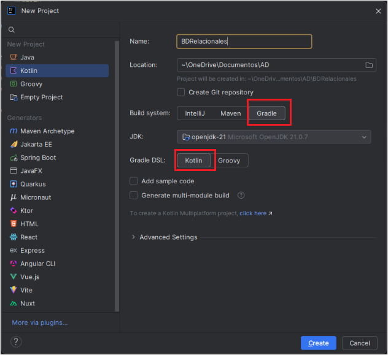
2. Copia el archivo de la BD a nuestro proyecto
La ubicaremos en la carpeta resources. Esta carpeta forma parte del classpath del proyecto. Allí se colocan archivos que necesita la aplicación en tiempo de ejecución. Cuando compilas el proyecto, todo lo que está en resources/ se copia dentro del jar o build final en la carpeta classes, manteniendo la misma estructura. Además, Si compartes el proyecto, la base de datos viaja con él.
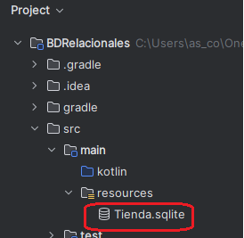
3. Elige el conector a la base de datos
En la herramienta Database -> Data Source elegimos el conector SQLite.
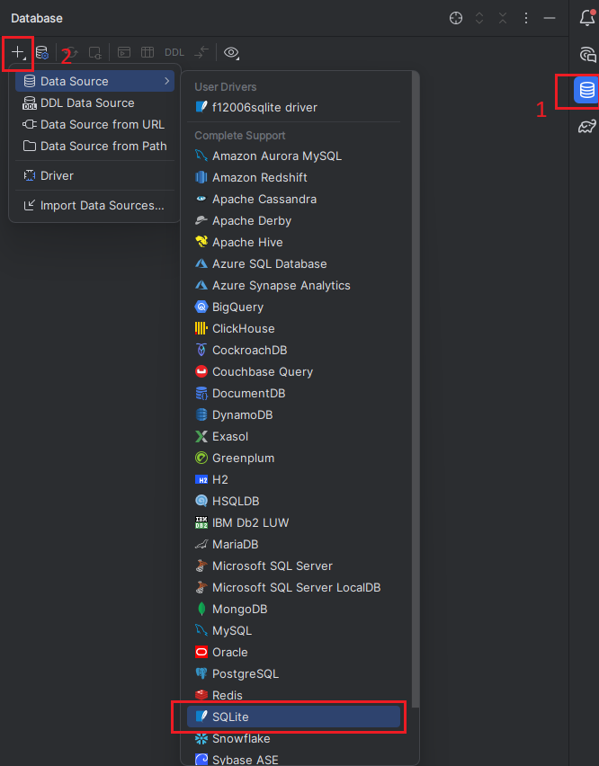
4. Selecciona la ubicación de la BD
Podemos comprobar la conexión en Test Concection antes de aceptar.
Al aceptar, se nos pedirá que instalemos el driver correspondiente, si no estuviera instalado.
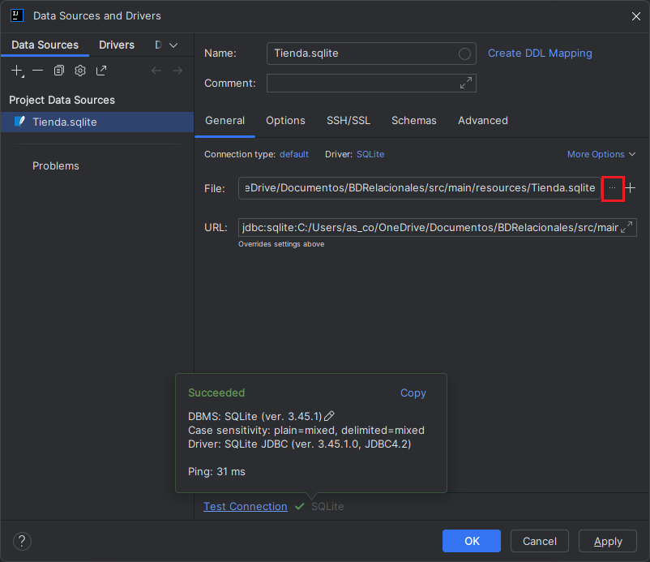
5. Comprueba consultas antes de implementarlas
Una vez configurado el acceso a la BD podemos ver en diferentes ventanas la estructura de la BD y el resultado de ejecutar las sentencias SQL, haciendo click derecho sobre la conexión y seleccionando la opción New > QueryConsole.
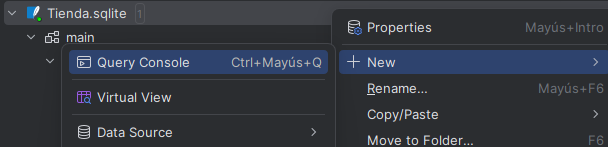
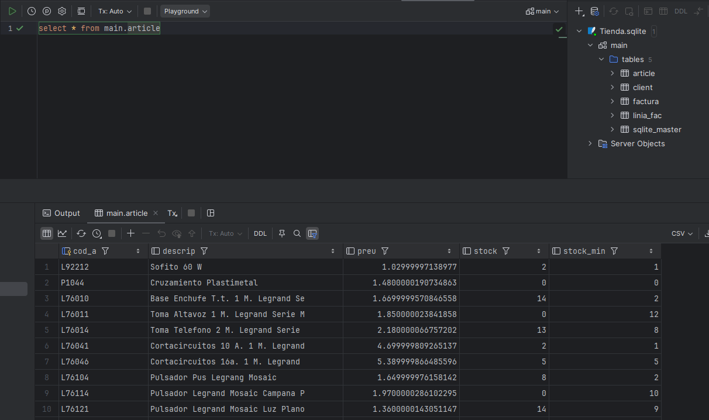
🔹Desde DBeaver¶
DBeaver es una herramienta gráfica y gratuita que permite gestionar múltiples bases de datos de forma visual. Los pasos para conectarse a la BD Tienda.sqlite, disponible en Aules, son los siguientes:
1. Abre DBeaver
Inicia el programa DBeaver. Aparecerá la ventana principal con el panel lateral de conexiones.

Haz clic en el botón "Nueva conexión" (ícono de enchufe) o ve al menú Archivo > Nueva conexión.
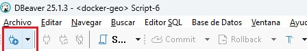
2. Selecciona el tipo de base de datos
En la ventana de selección, elige SQlite y pulsa Siguiente.
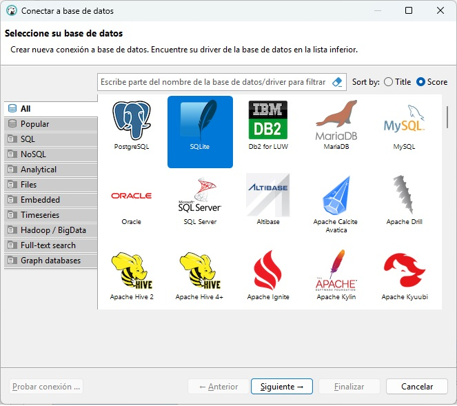
3. Introduce la ruta donde se encuentra la BD
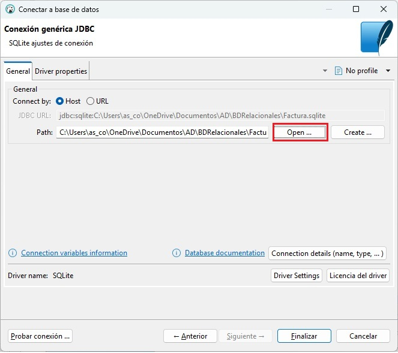
4. Prueba la conexión
Haz clic en "Probar conexión". Si todo está correcto, verás un mensaje de éxito.
Si DBeaver necesita un controlador (driver), te lo ofrecerá para descargar automáticamente.
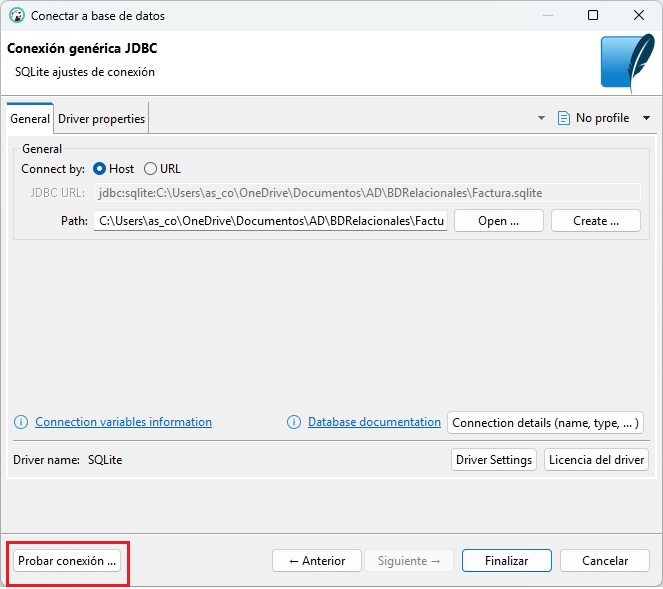
5. Finaliza y explora
Haz clic en "Finalizar". La nueva conexión aparecerá en el panel lateral izquierdo.
Desde allí puedes:
- Ver tablas, vistas, funciones y procedimientos
- Ejecutar sentencias SQL
- Consultar y modificar registros
- Exportar datos en distintos formatos
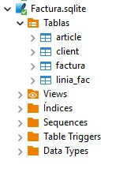
🔹Desde Kotlin¶
Para que una aplicación (escrita en Kotlin, Java u otro lenguaje) pueda leer, insertar o modificar información almacenada en una base de datos relacional (BDR), debe establecer una conexión con ella. Esto implica una serie de pasos técnicos y el uso de componentes específicos:
- Conectarse al gestor de base de datos (PostgreSQL, MySQL, SQLite…)
- Enviar consultas SQL (SELECT, INSERT, UPDATE, DELETE…)
- Recibir y procesar resultados (ResultSet, listas de objetos…)
- Cerrar correctamente los recursos utilizados
Kotlin - Instrucciones
En el proyecto BDRelacionales, ya creado y conectado a la BD Tienda.sqlite, crearemos un paquete nuevo llamado SQLite. En este paquete incluiremos los ejemplos de este apartado.
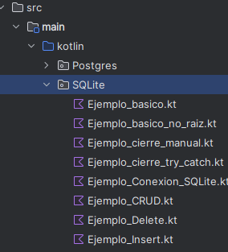
Para que la conexión funcione, es necesario añadir el conector jdbc correspondiente. Para ello utilizaremos la herramienta Gradle, que permite automatizar la gestión de dependencias sin tener que configurar nada a mano.
- build.gradle.kts :
dependencies { implementation("org.postgresql:postgresql:42.7.1") //Postgres implementation("mysql:mysql-connector-java:8.3.0") //MySQL implementation("org.xerial:sqlite-jdbc:3.43.0.0") //SQLite }
Ejemplo de conexión a SQLite
Ejemplo_Conexion_SQLite.kt: El siguiente programa conecta con la BD Tienda.sqlite.
import java.io.File
import java.sql.DriverManager
fun main() {
// Ruta al archivo de base de datos SQLite
val dbPath = "src/main/resources/Tienda.sqlite"
val dbFile = File(dbPath)
println("Ruta de la BD: ${dbFile.absolutePath}")
val url = "jdbc:sqlite:${dbFile.absolutePath}"
// Conexión y prueba
DriverManager.getConnection(url).use { conn ->
println("Conexión establecida correctamente con SQLite.")
}
}
Recuerda
No se necesita usuario ni contraseña con SQLite, ya que es una base de datos local y embebida.
Podemos encapsular la conexión a la base de datos dentro de un objeto, de manera que pueda reutilizarse tantas veces como sea necesario. Así evitamos duplicar código y reducimos posibles errores. Por ejemplo, si la base de datos cambia de ubicación, solo habría que actualizar la ruta en el objeto y no en cada uno de los programas.
Ejemplo_Conexion_SQLite_obj.kt
import java.io.File
import java.sql.DriverManager
object DatabaseTienda {
// Ruta al archivo de base de datos SQLite
val dbPath = "src/main/resources/Tienda.sqlite"
val dbFile = File(dbPath)
val url = "jdbc:sqlite:${dbFile.absolutePath}"
fun getConnection() = DriverManager.getConnection(url)
}
Ejemplo_basico_conexion_objeto.kt
import java.io.File
import java.sql.DriverManager
import kotlin.use
fun main() {
val sql = "SELECT * FROM article"
DatabaseTienda.getConnection().use { conn ->
conn.prepareStatement(sql).use { stmt ->
stmt.executeQuery().use { rs ->
while (rs.next()) {
//código
}
}
}
}
}